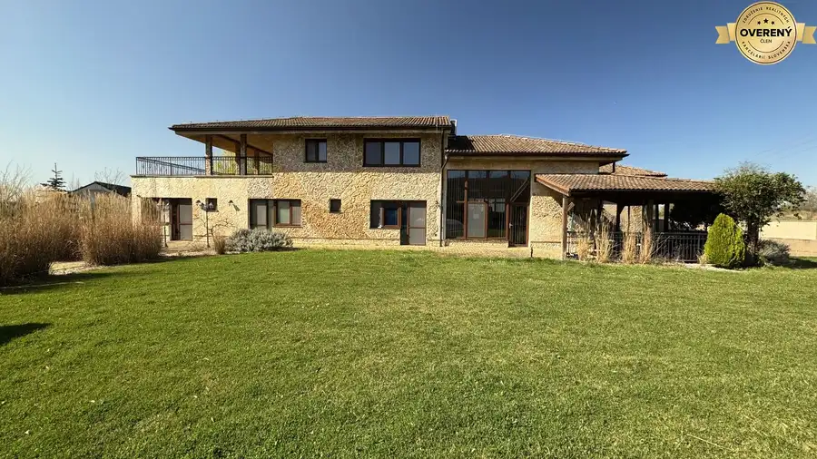
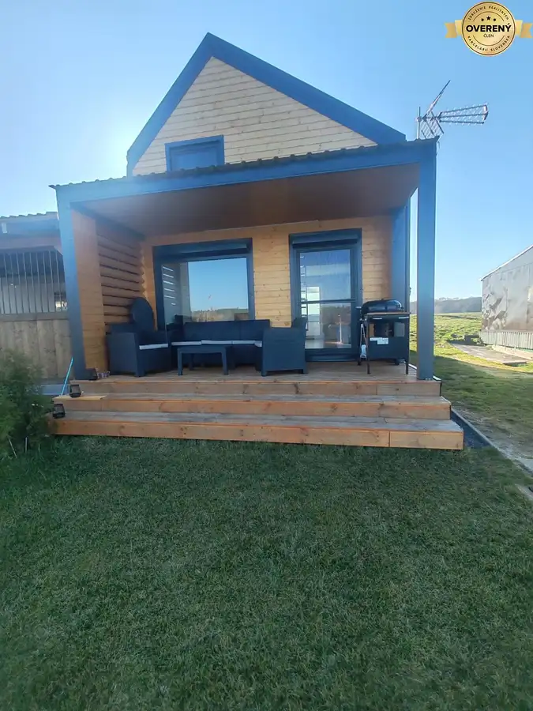
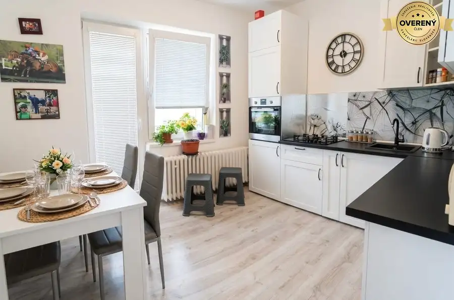
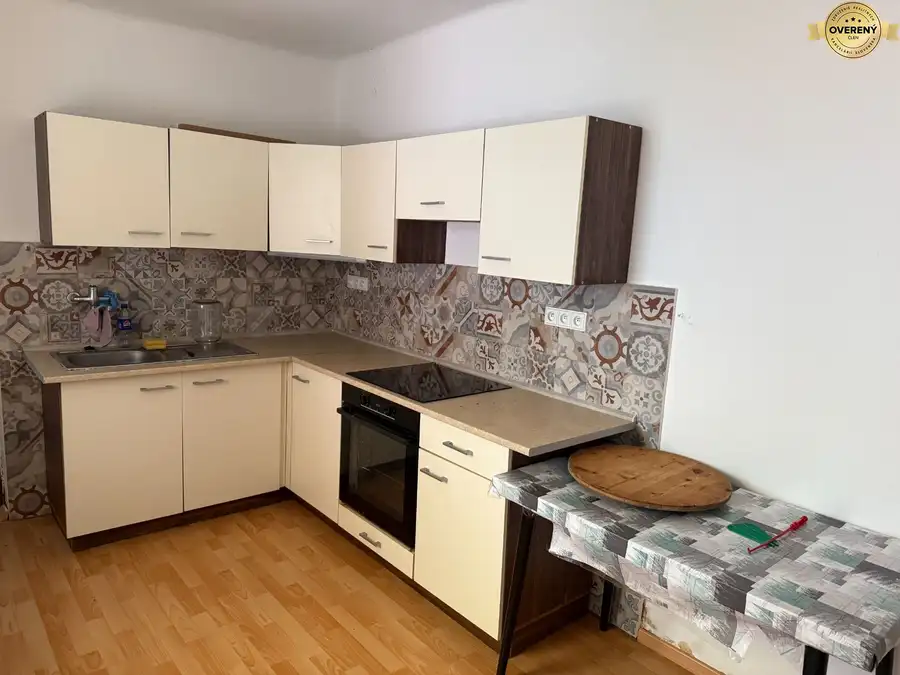
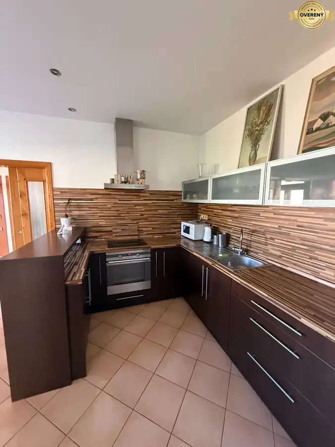
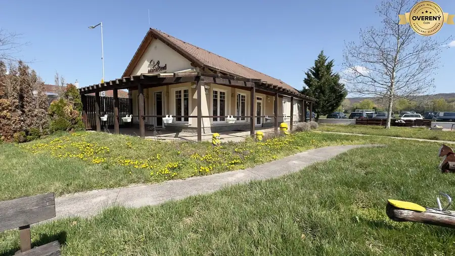
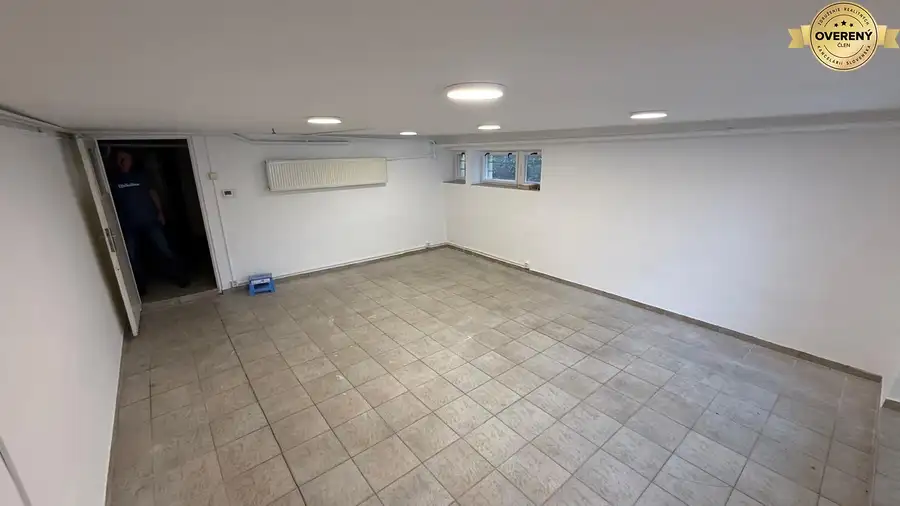

Aktuálna ponuka
Nehnuteľnosti, ktoré ponúkam
7 nehnuteľností na predaj a prenájom. Vyberte typ, alebo napíšte lokalitu.
7 z 7 ponúk

Domy a budovy10 Cena dohodouPonúkame na predaj prekrásnu rezidenciu v Marianke Marianka 446 m² Ponúkame na predaj luxusnú rezidenciu s bazénom, s hosťovským domom v tichej časti obce Marianka . Rezidencia sa nachádza na na konci slepej ulice s…
Chaty a chalupy10 125 000 €Na predaj chata v Jakubove priamo pri jazere !!! Jakubov 3-izbový64 m² IS: - studňa na pozemku, žumpa 2m3, fotovoltika DISPOZÍCIA: - prízemie: obývacia izba prepojená s kuchyňou, kúpeľňa so sprchový kútom a WC -…
Rodinné domy10 256 000 €Ponúkame na predaj 6- izbový RD v Lakšárskej Novej Vsi !!! Lakšárska Nová Ves 6-izbový108 m² Ponúkame na predaj dvojgeneračný rodinný dom v obci Lakšárska Nová Ves. Jedná sa o priestranný 6-izbový rodinný dom s veľkým pozemkom a možnosťou 2…
Rodinné domy10 285 000 €Ponúkame na predaj starší 3-izbový RD v Stupave !!! Stupava 3-izbový85 m² Lokalita: Stupava, Tichá a vyhľadávaná časť Popis domu: Ponúkame na predaj starší, ale útulný 3-izbový rodinný dom, situovaný v jednej z najtichších…
Rodinné domy10 1 100 €Na prenájom 4- izbový RD so záhradou v Kostolišti !!! Kostolište 4-izbový120 m² Hľadáte pokojné bývanie v blízkosti prírody, no s výbornou dostupnosťou do Malaciek? Ponúkame na prenájom priestranný, presvetlený 4-izbový rodinný…
Nebytové priestory10 Cena dohodouPonúkame na predaj komerčnú budovu v Marianke ! Marianka 140 m² Ponúkame na predaj Polyfunkčnú budovu v obci Marianka. Zastavaná plocha budovy je 156 m2, obytná plocha 140 m2, rozloha pozemku 2 214 m2. Parkovacie…
Nebytové priestory6 Cena dohodouPonúkame na prenájom komerčný priestor na Záhoráckej ulici na prízemí Malacky 100 m² Ponúkame na prenájom komerčný priestor na Záhoráckej ulici v Malackách, v priestoroch rodinného domu na prízemí. Hlavný priestor má 28 m2, možnosť…Tomuto výberu zatiaľ nezodpovedá žiadna ponuka. Napíšte mi, čo hľadáte.